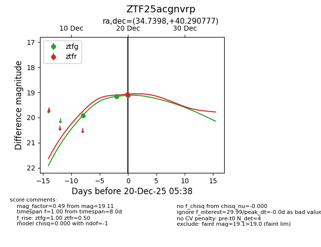
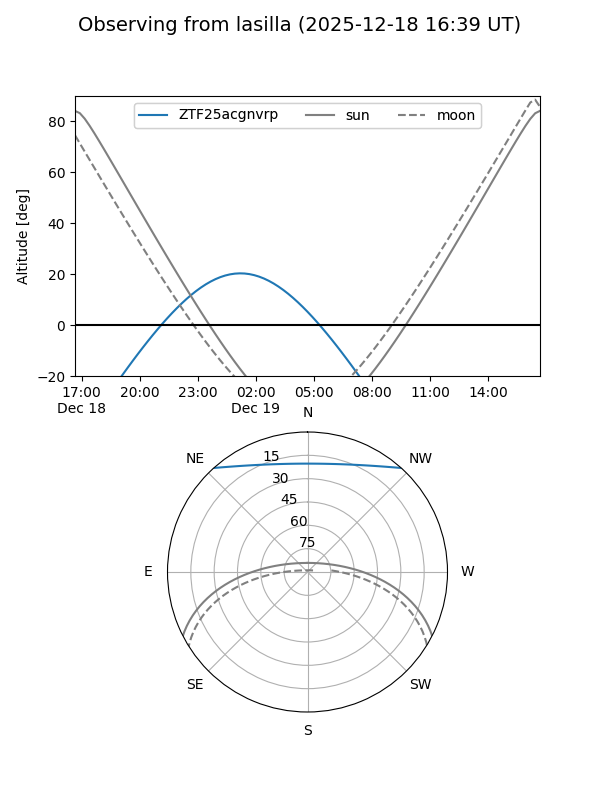
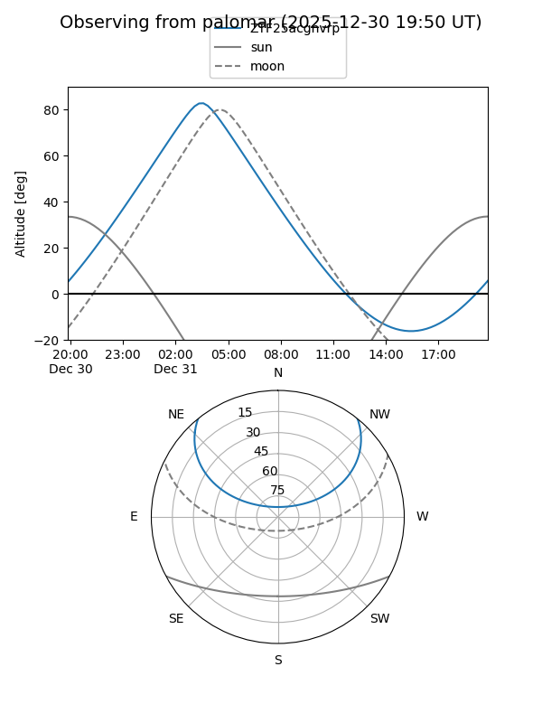
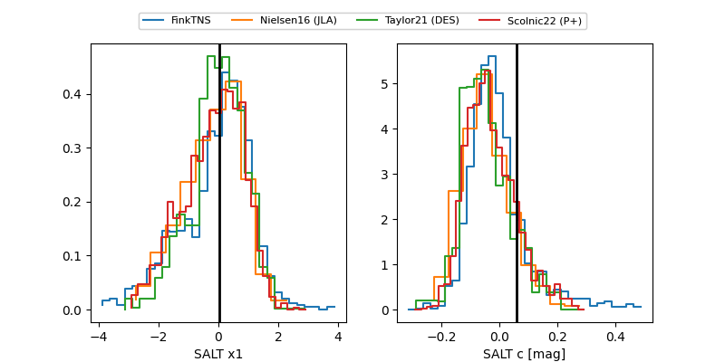

ZTF25acgnvrp
Target ZTF25acgnvrp at 2025-12-18 12:07
Aliases and brokers:
FINK: fink-portal.org/ZTF25acgnvrp
Lasair: lasair-ztf.lsst.ac.uk/objects/ZTF25acgnvrp
ALeRCE: alerce.online/object/ZTF25acgnvrp
alt names
ZTF25acgnvrp (ztf,fink_ztf)
Coordinates:
equatorial (ra, dec) = 34.7398,+40.29078
equatorial (HMS+DMS) = 02:18:57.56,+40:17:26.80
galactic (l, b) = (140.4919,-19.57780)
Photometry
last ztfg=19.16
2 ztfg detections
Lightcurve

Visibility


Additional plots
